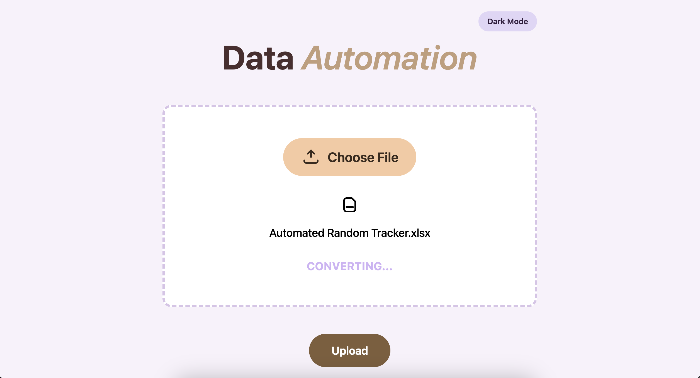
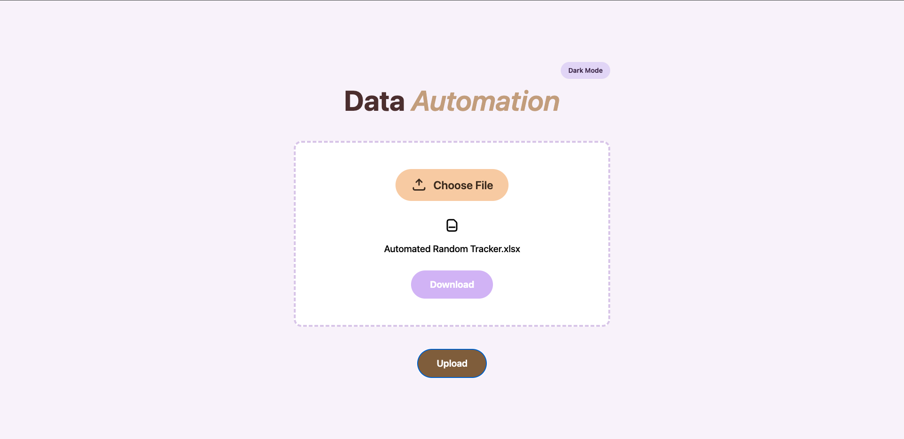

Who I Am?
Hi there! I’m a Software Developer with a Computer Science degree from the University of Houston. I enjoy building efficient,
user-friendly applications and working with software development, data analysis, and AI.
What I Build?
Food Tracker
Tracks daily meals by type and date in an iOS app built with React Native and Expo Go, with user data synced in
real time through Supabase backend. Includes an AI feature powered by Groq that helps users understand their
food logs and provides health insights.
Data Automation



Automates Excel data processing using Python and Pandas, with a FastAPI backend and React frontend. Converts
complex spreadsheets into clean, organized data that is easier to understand and analyze.